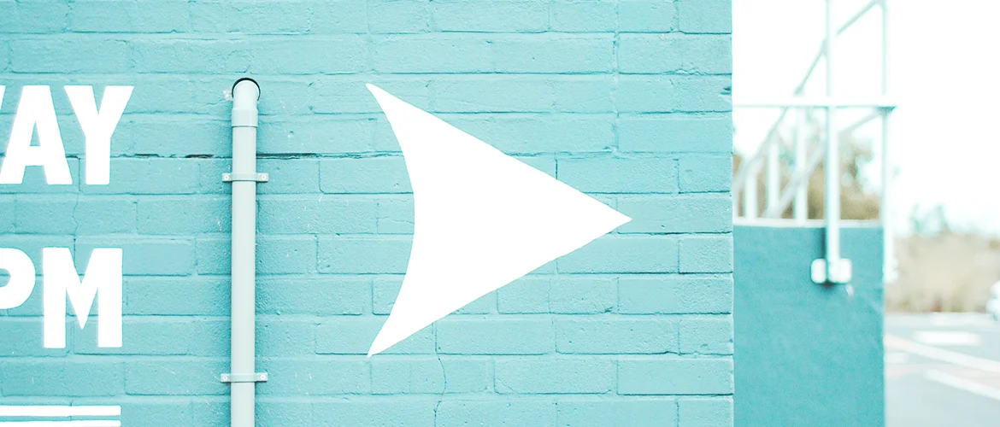
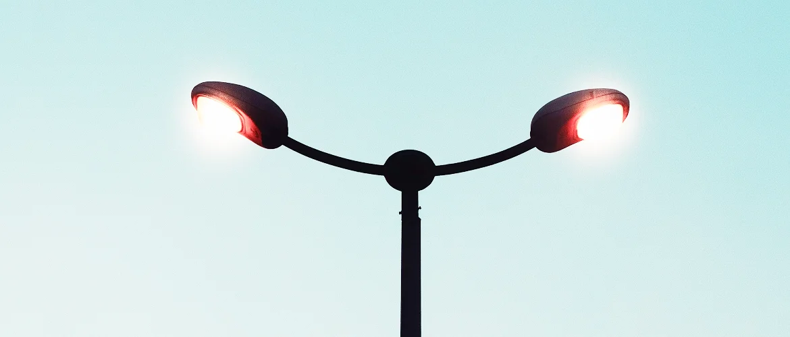

AI Fashion Platform

Project Overview
FashHanger is a bespoke sustainable high-fashion accessory company based out of Berlin, currently operated by Siesly and her sister Ashely. They needed help for a big rebrand and wanted to relaunch their website.
Their goals were simple, create a unique e-commerce store that bring a wonderful shopping experience at every stage of the buyer’s journey.
User Research and Personas
Who is your user? Indicate her KEY personality traits and help round out her overall image.
Originally, the personality section of this persona was based off the Myers Briggs personality test. According to the Myers Briggs, there are 16 potential user personality types. Our template integrates questions from this online personality test example into a series of sliding bar graphics. If you’re confused as to what the sliders mean, check out the Myers Briggs basics article.
Initial Sketches
In the beginning, It’s just about brainstorming.
I list out a jumble of words and draw tiny sketches related to what I’m working on (and find the parallels later). Personally, I prefer paper with a grid so I can convey things responsively. Most of the time perfection isn’t an issue and the sketches are just for me.
Final Design

I played with adding a wireframe of the website flow that would lead you in to each screen. For each of those screens I added a floating footer that allows users to see where they are in that particular flow and jump around as needed.” We’re digging this InVision-made wireframe.